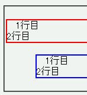

左にマージンまたはパディングが指定されている要素にtext-indentも指定すると、インデント量がtext-indentでの指定値とマージン・パディングの指定値の和になる。
<p style="text-indent:15px; border:2px solid red;"> 1行目<br>2行目</p> <p style="text-indent:15px; margin-left:50px; border:2px solid blue;"> 1行目<br>2行目</p>
1行目
2行目
1行目
2行目
両者のtext-indentプロパティの指定値は同じですが、後者のp要素にだけ、左に50pxのマージンがあります。
WinIE6.0での表示
Opera6.04での表示
Opera6.04でも同様の状態が続いています。Opera7.0では標準・互換モードともに不具合の発生は確認されませんでした。